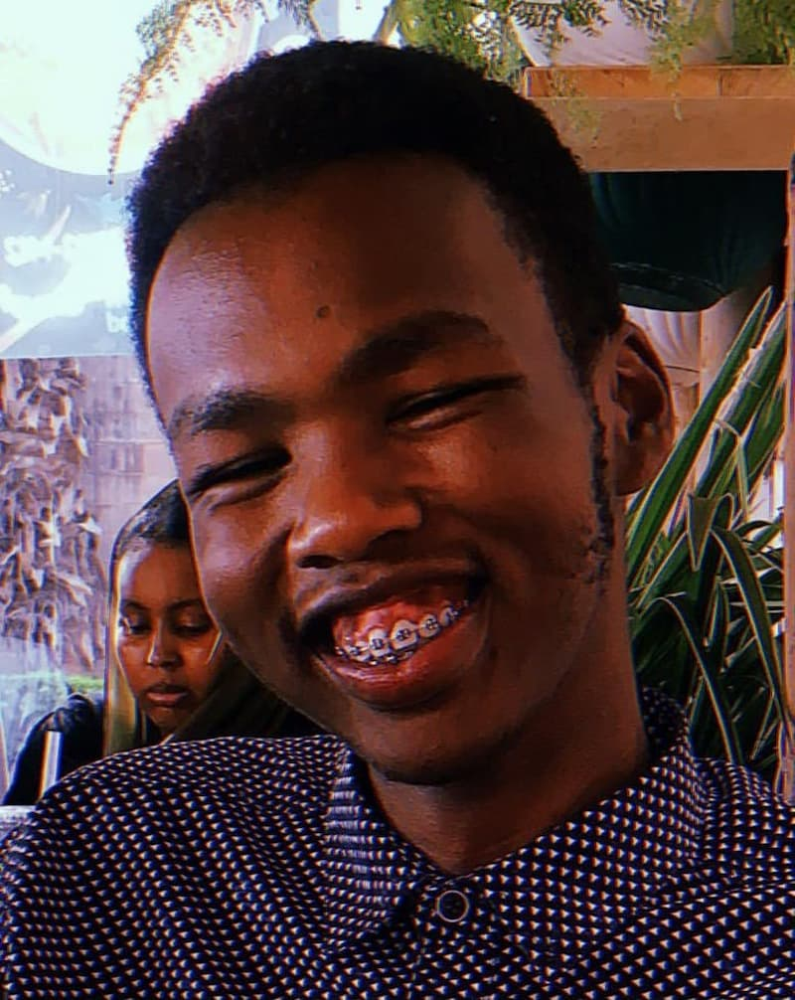

Emmanuel Lalampaa | WDD 130
I'm Emmanuel Lalampaa, a Kenyan student at BYU, driven by curiosity, culture, and a passion for learning that shapes my journey every day. Always growing daily!
💪🏾There is nothing like No Way. Jesus came and said Yah-weh!💪🏾